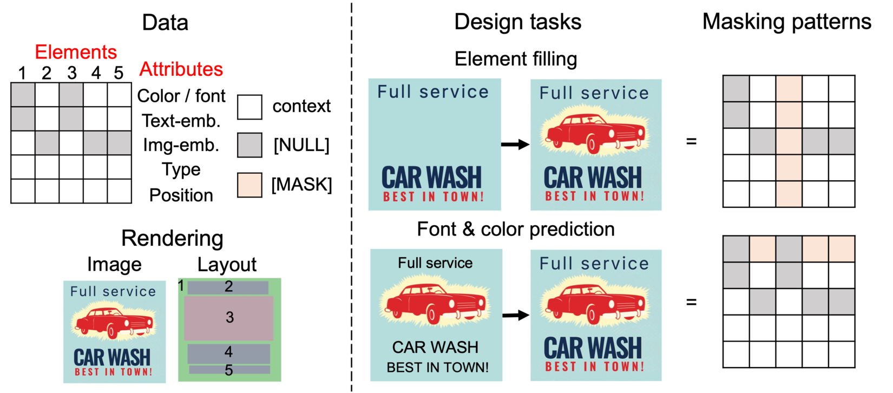
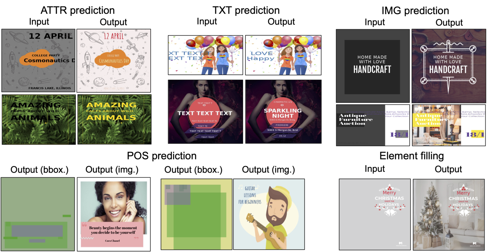

Towards Flexible Multi-modal Document Models CVPR 2023 (highlight)
- Naoto Inoue
CyberAgent - Kotaro Kikuchi
CyberAgent - Edgar Simo-Serra
Waseda University - Mayu Otani
CyberAgent - Kota Yamaguchi
CyberAgent

Examples of the design tasks that can be solved by our proposed FlexDM model, which is designed to process a vector graphic document consisting of an arbitrary number of elements (e.g., text). Each element is composed of multi-modal fields indicating its attribute properties (e.g., text content, position, font color, etc.).
Abstract
Creative workflows for generating graphical documents involve complex inter-related tasks, such as aligning elements, choosing appropriate fonts, or employing aesthetically harmonious colors. In this work, we attempt at building a holistic model that can jointly solve many different design tasks. Our model, which we denote by FlexDM, treats vector graphic documents as a set of multi-modal elements, and learns to predict masked fields such as element type, position, styling attributes, image, or text, using a unified architecture. Through the use of explicit multi-task learning and in-domain pre-training, our model can better capture the multi-modal relationships among the different document fields. Experimental results corroborate that our single FlexDM is able to successfully solve a multitude of different design tasks, while achieving performance that is competitive with task-specific and costly baselines.
Model
We encode a vector graphic document into a 2D array of latent vectors. We perform masked field prediction as we do in images or texts. This way we can utilize masking patterns to switch among various design tasks within a single model.

Left: example of a vector graphic document.
Each row / column in the array cossponds to a single element / an attribute or a group of attributes.
Right: Correspondence between design tasks and masking patterns for our masked field prediction
Results
For more results, please refer to the supplementary material.

Prediction of our FlexDM model in crello dataset. [MASK] is visualized using default values.
Citation
@inproceedings{inoue2023layout,
title={{Towards Flexible Multi-modal Document Models}},
author={Naoto Inoue and Kotaro Kikuchi and Edgar Simo-Serra and Mayu Otani and Kota Yamaguchi},
booktitle={The IEEE/CVF Conference on Computer Vision and Pattern Recognition (CVPR)},
year={2023},
pages={XXXX-XXXX},
doi={XXXX}
}
Acknowledgements
The website template was borrowed from Mip-NeRF 360.